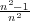

MATP6640/DSES6770 Linear Programming, Homework 3.
Due: Friday, March 4, 2016.
10% penalty for each day late.
Use the proof of the affine Weyl theorem (so use Fourier-Motzkin elimination explicitly) to construct constraints Ax ≥ b such that
Let a IRn. Define updated values of M and z as
Assume aTx = aTz and (x-z)TM-1(x-z) = 1, so x is on the intersection of the cutting hyperplane and the boundary of the original ellipsoid. Show that (x- )T-1(x- ) = 1, so x is also on the boundary of the new ellipsoid. (Hint: You may assume -1 = (M-1 + βaaT) for some parameter β. You can find β by solving -1 = I.)
| John Mitchell |
| Amos Eaton 325 |
| x6915. |
| mitchj at rpi dot edu |
| Office hours: Tuesday: 2–4pm, Wednesday: noon–2pm. |